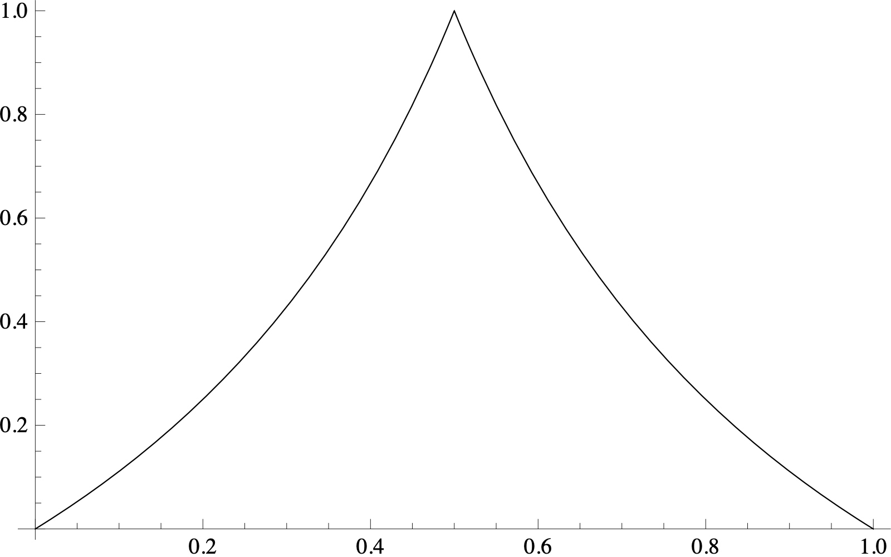
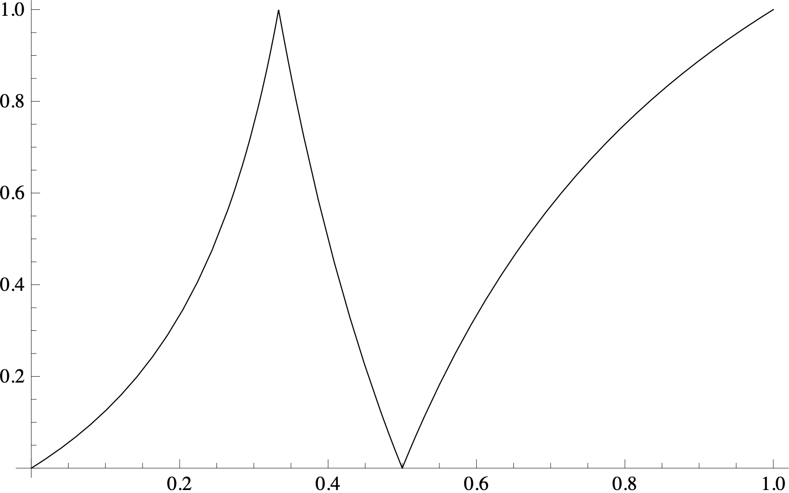

Our study of maps so far has shown that even very simple maps such as the logistic map or the $3x+1$ map can lead to extremely complicated behavior of the associated dynamical system. Is there any hope of understanding such complicated systems in some meaningful sense? Yes, there is. A key insight is that one should focus on questions of a statistical nature: instead of trying to predict in detail where the orbit of a particular initial point $x_0$ will go (which is hopeless for a chaotic system), instead we will try to make predictions about statistical behavior of orbits, i.e., how often they visit each part of the state space. The mathematical object that encodes such a set of statistics is called a probability measure, and as we will see, a natural condition for a measure to encode the correct information about a map is that the map is measure preserving.
Let $\Omega$ be a set. The theory of probability measures can be developed in much greater generality, but for our purposes we will assume that $\Omega$ is a connected open (or closed) subset of $\mathbb{R}$ or of $\mathbb{R}^d$. Thus, on $\Omega$ there is a natural "measure" $d\mathbf{x}$ of $d$-dimensional volume familiar from multivariate calculus. The probability measures that we will consider take the form
where $f$ is a nonnegative function such that $\int_{\Omega} f(\mathbf{x})\,d\mathbf{x} = 1$. Formally, the measure $P$ is considered to be a function $A\mapsto P(A)$ that takes a subset $A\subset \Omega$ and returns a number
Both the function $f$, called the probability density function associated with $P$, and the set $A$ are assumed to be sufficiently well-behaved that $P(A)$ is defined. (You can learn about the precise technical definitions, which we will not discuss here, in an advanced class on real analysis, measure theory or probability theory). A set $A$ for which $P(A)$ is defined is called a measurable set. It is an annoying fact of life that not all sets are measurable, but in practice all sets that you are ever likely to encounter will be measurable, so we will not worry about that.
Now, if $T:\Omega\to \Omega$ is a map and $P$ is a probability measure on $\Omega$, we say that $T$ preserves the measure $P$ (or is measure preserving for $P$) if for any measurable set $A$ the following identity holds:
that is,
For interval maps, it is sufficient to prove this when $A$ is an interval. The intuitive meaning of the definition is that if the measure $P$ represents the statistical distribution of a random element $x$ in $\Omega$ (corresponding to the state of the dynamical system at some time $n$), then $T(x)$, which corresponds to the state at time $n+1$, will have the same statistical distribution. In other words, the probabilistic behavior is stationary with respect to the time dynamics. A dynamical system $(\Omega, T)$ together with a probability measure $P$ that is preserved by $T$ is called a measure preserving system. If $T$ preserves the measure $P$, we say that $P$ is an invariant measure for $T$.
Circle rotation mapThe circle rotation map $R_\alpha$ preserves the standard length measure on $[0,1)$ (which in analysis is called Lebesgue measure --- pronounced like le-baig), i.e., the measure with density $f(x)\equiv 1$.
ProofThis fact is obvious if you think of the intuitive meaning of the circle rotation map, but for illustration purposes here is a formal proof. If $A$ is a subset of $[\alpha,1)$ then $R_\alpha^{-1}(A) = A-\alpha$, so clearly the length measure is preserved. Similarly, if $A \subset [0,\alpha)$ then $R_\alpha^{-1}(A) = A+1-\alpha$ and again the length measure is preserved. For a general $A\subset[0,1)$, write $A$ as a disjoint union $A=A'\sqcup A"$ where $A'\subset[0,\alpha)$, $A"\subset[\alpha,1)$, then $R_\alpha^{-1}(A) = R_\alpha^{-1}(A')\sqcup R_\alpha^{-1}(A")$ has the same Lebesgue measure as $A$.A$\square$
Doubling mapThe doubling map also preserves Lebesgue measure.
Proof
A$\square$
Show that the tent map $\Lambda_2$ (the special case $a=2$ of the family of tent maps $\Lambda_a$) preserves Lebesgue measure.
Logistic map $L_4$For $r=4$, the logistic map $L_r=L_4$ preserves the measure
ProofDenote $f(x)=\frac{1}{\pi \sqrt{x(1-x)}}$. If $A \subset [0,1]$ is an interval, then
where we define $\lambda_1(y)=\tfrac12(1-\sqrt{1-y}), \lambda_2(z)=\tfrac12(1+\sqrt{1-z})$ (the functions $x=\lambda_{1,2}(w)$ are the two solutions of the equation $L_4(w)=x$), and we make the substitutions
Note that $L_4$ is decreasing on $[1/2,1]$, which explains why we needed to insert a minus sign in front of the $L_4'(\lambda_2(z))$ term in the second integral.
Now, since we are trying to prove that the expression above is equal to $P(A)=\int_A f(x)\,dx$, it will be enough to show that the following identity holds:
(the absolute value signs make the sum on the right more symmetric, though of course the first one is unnecessary). This identity is strange but easy to verify: noting the simple relations
the right-hand side of the identity becomes
A$\square$
The idea used in the proof above can be generalized to give a criterion for checking whether a map is measure-preserving.
Let $T:I\to I$ be an interval map that is piecewise smooth and monotonic, i.e., the interval $I$ can be decomposed into a union of finitely many subintervals on each of which $T$ is smooth and monotonic (in fact, the claim is true even if this is true for a subdivision into countably many subintervals). Then $T$ preserves the measure $P(dx)=f(x)dx$ if and only if the density $f(x)$ satisfies the equation
for all but countably many points $x\in I$, where the sum ranges over all pre-images of $x$.
Prove Lemma 2.27.
Gauss mapThe Gauss map $G(x)$ preserves the measure $\gamma$ on $(0,1)$ (called Gauss measure), defined by
Use Lemma 2.27 to prove this.
The additive Gauss map $g:[0,1]\to[0,1]$ is defined by
(see Figure (11a)). Show that $g$ preserves the measure
(Note: this measure is not a probability measure, since the integral of the density is infinite. However, the concept of measure-preservation makes sense for such measures, and Lemma 2.27 is still valid in this context.)
Show that Boole's transformation
preserves Lebesgue measure on $\mathbb{R}$.
The interval map $N:[0,1]\to[0,1]$
arises in the study of Pythagorean triples. (Figure 11(b) explains why it is denoted by $N$.) Show that it preserves the measure
Although much of our discussion has been focused on interval maps, the concept of measure preserving systems appears in many different contexts (including some rather exotic ones), as the next few examples illustrate.

(a)
(b)Hamiltonian flowBy Liouville's theorem, the phase flow of a Hamiltonian system preserves area measure in $\mathbb{R}^2$ (also called the two-dimensional Lebesgue measure). This is a continuous-time dynamical system, but the notion of measure preserving dynamics makes sense for such systems as well. In particular, if the system is discretized by fixing a time step $\tau$, we get a map preserving Lebesgue measure.
Geodesic flowThe geodesic flow is a continuous-time dynamical system on a curved surface. Its phase space is the set of points $(x,v)$ where $x$ is a point on the surface and $v$ is a tangent vector to the surface based at $x$ (representing the direction and speed in which a person standing at $x$ will start walking). The flow $\varphi_t(\cdot,\cdot)$ takes such a pair $(x,v)$ and maps it to a new pair $(x',v')=\varphi(x,v)$ representing where the person will be, and which direction they will be pointing at, $t$ time units later. It can be shown that the geodesic flow preserves the natural volume measure associated with the phase space (roughly speaking, the measure is product of the surface area measure of the surface in the component $x$, and a standard area measure in the $v$ component).
Billiard mapBilliard maps can be thought of as a limiting case of certain Hamiltonian systems (think of a limit in which the reflecting wall is actually a strongly repelling potential well that becomes steeper and steeper), so they too have an invariant measure. In certain natural coordinates $\phi, \theta, \ell$, the formula for the invariant measure becomes
(For the meaning of these quantities, see the interesting article What is the ergodic theorem?, G. D. Birkhoff, American Math. Monthly, April 1942.)
$3x+1$ mapOne of the many (ultimately unsuccessful) attempts at solving the famous $3x+1$ problem mentioned in Section 2.1 was based on the observation that since the formula of the $3x+1$ map $T(x)$ depends on the parity of $x$, the range of definition of $T$ can be expanded to include numbers of the form
Such exotic numbers, which have an infinite binary expansion to the left of the "binary point", are called $2$-adic integers and have fascinating properties. In particular, there is a natural measure associated with them that is analogous to Lebesgue measure on $\mathbb{R}$. It can be shown that the extended $3x+1$ map preserves this measure.